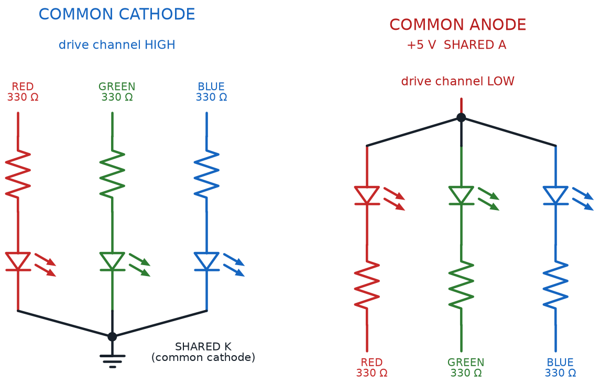

LEDs, RGB Color, and Motors
Summary
This chapter covers driving single-color and RGB LEDs (including mixing custom colors), LED strips, and controlling small DC motors and their direction — the course's core visible and moving outputs.
Concepts Covered
This chapter covers the following 20 concepts from the learning graph:
- Light Emitting Diode
- RGB LED
- Common Cathode RGB
- Common Anode RGB
- Color Mixing With LEDs
- LED Brightness Control
- LED Series Resistor
- LED Resistor Calculator
- Driving Multiple LEDs
- Parallel LED Wiring
- LED Strip
- LED Matrix
- LED Chaser Effect
- Blinking Output Pattern
- DC Motor
- Small Hobby Motor
- Motor Direction
- Motor Control Circuit
- Motor Load
- Motor Stall Current
Prerequisites
This chapter builds on concepts from:
- 1. Electricity Basics: Voltage, Current, and Resistance
- 2. Current, Charge, Units, and Electrical Safety
- 9. Resistors and Capacitors
- 10. Capacitor Timing and Resistor Values
- 12. Diodes and LEDs
- 13. Meet the Transistor
- 17. Sensing Light: Photoresistors and Dark Detectors
Chapter 17 closed with a promise: light was about to flip from something your circuits sense into something your circuits control. This chapter cashes that promise in twice over. First you'll combine three LED colors into any shade you want, the same additive color-mixing trick behind every phone screen and stadium scoreboard. Then you'll wire up a small motor and give a circuit its first taste of real, physical motion.
By the end of this chapter you'll be able to mix a custom color on an RGB LED, calculate the right resistor for any LED color, wire up a strip, a matrix, or a chaser effect, and safely switch a small DC motor on and off with a transistor.
Lights, Color, and Motion
 Welcome back, builder! Today you get to paint with light and make something actually move. Grab your RGB LED and your motor — this is one of the most colorful, most kinetic chapters in the whole course. Let's light it up!
Welcome back, builder! Today you get to paint with light and make something actually move. Grab your RGB LED and your motor — this is one of the most colorful, most kinetic chapters in the whole course. Let's light it up!
Meet the RGB LED: Three Colors in One Package
You've wired a Light Emitting Diode (LED) into nearly every circuit since Chapter 1 — a diode built to glow the instant forward current flows through it, exactly as Chapter 10 explained. Every LED you've used so far does exactly one job: glow in exactly one color, fixed the moment it was manufactured.
An RGB LED breaks that rule. It's a single LED package that actually contains three separate LED chips — one red, one green, and one blue — sealed inside one plastic lens, each chip wired out to its own pair of leads. Light all three chips at once, and their colors blend together before the light ever leaves the lens, the same way three colored spotlights aimed at one wall blend into a single combined color.
Cramming three LED chips into one package still leaves a wiring puzzle: each chip needs its own anode and cathode, and three separate pairs of leads would be clumsy to wire and even clumsier to breadboard. RGB LED manufacturers solve that puzzle by sharing one lead across all three chips, and there are two different ways to do the sharing.
A common cathode RGB LED wires all three chips' cathodes together into a single shared lead, connected to ground, so each color's own anode lead gets its own current-limiting resistor and its own positive voltage to switch that color on. A common anode RGB LED does the mirror-image wiring: all three chips' anodes share a single lead connected to the positive supply, and each color's own cathode lead pulls low, through its own resistor, to switch that color on.
Before wiring either kind, it helps to see the two side by side.
Diagram: Common-Cathode and Common-Anode RGB LED Wiring

| Feature | Common Cathode RGB | Common Anode RGB |
|---|---|---|
| Shared lead | Cathode (all three chips) | Anode (all three chips) |
| Shared lead connects to | Ground (negative rail) | Positive supply rail |
| To turn a color ON | Send that color's lead HIGH, through its own resistor | Pull that color's lead LOW, through its own resistor |
| Leads total | 4 (shared cathode + R, G, B anodes) | 4 (shared anode + R, G, B cathodes) |
| Matches this course's simple switch circuits | Yes, directly | Needs the switching logic reversed |
Check Which Kind Before You Wire
 Wiring a common cathode RGB LED as if it were common anode (or the other way around) won't damage anything at this course's safe, low voltages — it just means every color stays dark, or glows faintly all the time from a mixed-up ground path. Check your kit's datasheet, or test the shared lead with a multimeter, before wiring in the other three resistors.
Wiring a common cathode RGB LED as if it were common anode (or the other way around) won't damage anything at this course's safe, low voltages — it just means every color stays dark, or glows faintly all the time from a mixed-up ground path. Check your kit's datasheet, or test the shared lead with a multimeter, before wiring in the other three resistors.
Mixing Custom Colors With Light
Wiring an RGB LED correctly only gets you three colors — red, green, and blue, one at a time. The real magic happens once you control how bright each color glows at the same moment. Color mixing with LEDs is the technique of blending red, green, and blue light at different intensities to produce a huge range of colors the eye reads as one blended shade — the same additive color model behind your phone screen and every scrolling stadium sign, just built from three actual LED chips instead of thousands of microscopic ones.
Full red plus full green, with blue off, reads as yellow. Full red plus full blue, with green off, reads as magenta, a bright pink-purple. All three chips at full brightness together read as white. Dial any one of the three down partway instead of snapping it fully off or on, and the blended color shifts smoothly across the whole rainbow.
A few combinations are worth memorizing, since you'll reach for them constantly once you start experimenting:
- Red + Green (no Blue) → Yellow
- Red + Blue (no Green) → Magenta
- Green + Blue (no Red) → Cyan
- Red + Green + Blue, all full → White
- All three low, roughly equal → Dim white or gray
That word "dial" matters just as much as the colors themselves. LED brightness control is the general technique of adjusting how much current flows through an LED to change how bright it glows, without changing its color at all — a dimmer current means a dimmer LED, a brighter current (up to its safe rating) means a brighter one. Color mixing with LEDs is really just LED brightness control applied three times at once, one dial per color chip, all sharing the same tiny lens.
Three Dimmers, Not Three Switches
 Don't picture an RGB LED as three on/off switches. Picture it as three separate dimmer knobs sharing one lens. Every color you can name is really just one specific setting of those three dimmer knobs, held steady at the same time.
Don't picture an RGB LED as three on/off switches. Picture it as three separate dimmer knobs sharing one lens. Every color you can name is really just one specific setting of those three dimmer knobs, held steady at the same time.
Diagram: RGB LED Color Mixing Breadboard
RGB LED Color Mixing Breadboard
Type: microsim
sim-id: rgb-led-color-mixer-breadboard
Library: p5.js
Status: Specified
Purpose: Let students drag three brightness sliders for a rendered common-cathode RGB LED and directly observe additive color mixing on a wired breadboard circuit.
Bloom Taxonomy: Apply (L3). Bloom Verb: demonstrate, predict, apply.
Learning objective: Given three brightness sliders wired to a common-cathode RGB LED on a breadboard, predict and observe the resulting blended color, and reproduce the common mixes (yellow, magenta, cyan, white) from the chapter text.
Reuse check: An embeddings search (find-similar-templates, mode=reuse) for "Title: RGB LED Color Mixing Breadboard | Topic: RGB LED, common cathode RGB, common anode RGB, color mixing with LEDs, LED brightness control | Subjects: Electronics, Electric Circuits | Grade Level: Junior High | Learning Objectives: Given three sliders for red, green, and blue LED brightness, predict and observe the resulting mixed color on a breadboard-rendered RGB LED, demonstrating additive color mixing" returned a top match of "RGB Color Mixer" (dmccreary/learning-python, WHAT score 0.6062, "template") — a bare color swatch mixer from a Geometry repo, with no wired circuit or resistors. "NeoPixel Color Mixer" (0.5757) and "Rainbow Color Picker" (0.5485) scored lower and are also unwired. Per this course's guidance to prefer breadboard-rendered circuits, this is a new specification, extending this repository's breadboard-lib.js (already used by button-led-breadboard, light-dark-detector, wired-logic-and-or) with three resistor-and-LED branches sharing one RGB LED's common lead.
Canvas layout: Main area shows a rendered breadboard with a battery, three resistors (one per color anode), and one RGB LED rendered as three overlapping colored dies inside a single lens; right panel holds three vertical brightness sliders (R, G, B, 0-255), a color swatch, a Common Cathode / Common Anode toggle, and four presets (Yellow, Magenta, Cyan, White).
Components/elements involved: Breadboard with rails; battery; three resistors; one RGB LED with three hoverable dies; connecting wires; animated current-flow dots on each color branch, moving faster as that channel's slider rises.
Required interactivity: - Dragging a brightness slider changes that die's glow, that branch's current speed, and the blended swatch color live - Clicking a preset (Yellow, Magenta, Cyan, White) snaps all three sliders to that color's values - Toggling Common Cathode / Common Anode redraws the wiring and flips the on-state logic in the infobox - Hovering a die opens an infobox naming that color channel and its current slider value - Button "Reset" returns all sliders to 0 with Common Cathode selected
Default state: Common Cathode, all sliders at 0, LED dark, infobox reads "All three channels off — no current, no light."
Data Visibility Requirements: Stage 1: Show all three slider values at once Stage 2: Show each die's glow matching its slider Stage 3: Show the additively blended swatch color Stage 4: Show current speed on each branch, scaled to brightness
Instructional Rationale: An Apply-level "demonstrate/predict" objective calls for parameter exploration where dragging a slider produces an immediate color change, building intuition for additive mixing rather than memorizing a rule.
Color scheme: True RGB glow colors on sliders and dies; swatch at true computed color; green current dots scaled by brightness, consistent with this chapter's other diagrams.
Responsive behavior: Breadboard and slider/swatch panel stack vertically on narrow screens; sliders stay full-width and touch-draggable.
Implementation: p5.js, breadboard-sim-generator approach, extending breadboard-lib.js with three resistor-and-LED branches feeding one shared RGB LED lead.
Picking the Right Resistor for Every LED
Chapter 10 gave you one resistor equation for one LED. An RGB LED complicates that math in a subtle way: it isn't one LED, it's three, and Chapter 12 already showed that red, green, and blue LEDs each carry a different forward voltage. Wire all three chips of an RGB LED to the exact same resistor value, and the blend comes out wrong — one color always looks dimmer than it should, throwing off every custom color you try to mix.
A LED series resistor is the current-limiting resistor placed in series with an LED — or, for an RGB LED, one resistor per color chip — to keep current at a safe, predictable level. The same formula from Chapter 10 still applies here. It just needs to run three separate times, once per color, using each chip's own forward voltage.
The LED Current-Limiting Resistor Equation (Per Color Channel)
where:
- \( R \) is the current-limiting resistor value for that one color chip, in ohms
- \( V_{supply} \) is the supply voltage powering the circuit
- \( V_f \) is that color chip's own forward voltage — different for red, green, and blue
- \( I \) is the desired current for that chip, in amps, kept at or below its current rating
Run the numbers on a 5-volt supply at 15 milliamps (0.015 A) per channel, and the three colors need three different resistors: a red chip at 2.0 V forward voltage needs \( R = \frac{5 - 2.0}{0.015} = 200 \) ohms, while a blue chip at 3.2 V needs only \( R = \frac{5 - 3.2}{0.015} = 120 \) ohms — the exact same math Chapter 12 worked through for single LEDs, just applied three times inside one package.
Don't Reuse One Resistor Value
 It's tempting to grab three identical resistors for an RGB LED's three color legs — they came from the same rainbow-band pack, after all. Resist that shortcut. Run each color's own forward voltage through the equation, or let the calculator below do the math for you.
It's tempting to grab three identical resistors for an RGB LED's three color legs — they came from the same rainbow-band pack, after all. Resist that shortcut. Run each color's own forward voltage through the equation, or let the calculator below do the math for you.
A LED Resistor Calculator is exactly this kind of tool: a calculator that takes a supply voltage, an LED's forward voltage, and a target current, and returns the closest standard resistor value — saving you from re-deriving the algebra by hand every single time you swap a color or a supply. Try adjusting all three sliders below and watch the resistor value, and its color bands, update instantly.
Diagram: LED Resistor Calculator
Run LED Resistor Calculator Fullscreen
LED Resistor Calculator (reused MicroSim)
Type: microsim
sim-id: led-resistor-calc
Library: p5.js
Status: Reused
Source: docs/sims/led-resistor-calc/ (local reuse — already deployed in this same book; demo file is led-resistor-calc.html)
Reused from this book's own MicroSim library (local reuse, not an external-catalog match). Bloom Taxonomy: Apply (L3). Bloom Verb: calculate, select. Learning objective: Given a source voltage slider, an LED forward-voltage slider, and a target-current slider, calculate the ideal current-limiting resistor value and identify the nearest standard resistor and its color bands, reinforcing the current-limiting resistor equation from Chapter 10 and applied per color channel in this chapter.
From One LED to Many: Driving Multiple LEDs
One RGB LED is a satisfying afternoon project. Real gadgets rarely stop at one LED, though — think of a strand of holiday lights, a scrolling sign, or the glowing edge lighting on a costume. Driving multiple LEDs is the general challenge of lighting more than one LED from a single power source, safely, without any one branch stealing current from the others.
The simplest way to drive multiple LEDs reuses an idea from Chapter 4. Parallel LED wiring connects each LED, with its own current-limiting resistor, as its own separate branch across the same two supply rails, so every LED sees the same voltage and draws its own independent current, unaffected by the others. It's the same parallel-branch structure the Push Button and LED Circuit sim used in earlier chapters, just without a button gating each branch.
Scale that basic idea up, and a few standard shapes for multiple-LED projects emerge.
- LED strip — many small LEDs mounted close together on a long, flexible circuit board, usually wired in parallel groups so a whole run of light shares just a few supply and ground connections
- LED matrix — LEDs arranged in a grid of rows and columns, wired so that far fewer control wires are needed than there are LEDs, the same wire-saving trick Chapter 15's 74HC595 shift register uses to control eight LEDs from just a few pins
- LED chaser effect — a pattern where LEDs light up one after another in sequence, giving the illusion of a single light "chasing" down the row, like the marquee lights around an old movie theater sign
Every one of those effects depends on one more idea sitting underneath them: timing. A blinking output pattern is any repeating rhythm of on and off states applied to an output like an LED, whether that rhythm comes from a person flipping a switch by hand, a 555 timer's astable mode from Chapter 14, or a shift register clocking in new data the way Chapter 15's 74HC595 does. A chaser effect is really just a blinking output pattern applied to several LEDs, one after another, in a staggered sequence instead of all at once.
The table below lines up all four configurations side by side.
| Configuration | How the LEDs Are Wired | Wires Needed | Typical Use |
|---|---|---|---|
| Parallel LED Wiring | Each LED + resistor is its own branch across shared rails | One rail pair, shared by all | A handful of independent indicator LEDs |
| LED Strip | Many LEDs in parallel groups along a flexible board | Few — power + ground per section | Long continuous lighting runs, edge lighting, costumes |
| LED Matrix | LEDs sit at row/column intersections | Rows + columns, far fewer than LED count | Displays, scrolling signs, grids of pixels |
| LED Chaser Effect | Any of the above, switched in a timed sequence | Depends on wiring, plus a timing source | Marquee-style "running light" effects |
Diagram: Multi-LED Configuration Explorer
Run the Multi-LED Configuration Explorer fullscreen
Diagram: LED Chaser and Matrix Wiring Explorer
LED Chaser and Matrix Wiring Explorer
Type: microsim
sim-id: led-chaser-matrix-explorer
Library: p5.js
Status: Specified
Purpose: Let students compare parallel LED wiring against an LED matrix's row/column wiring, and run a chaser effect, so the wire-count trade-off and chaser timing both become visible.
Bloom Taxonomy: Understand (L2) / Apply (L3). Bloom Verb: compare, demonstrate, differentiate.
Learning objective: Compare how six LEDs are wired under parallel LED wiring versus an LED matrix layout, and demonstrate a blinking output pattern by starting a chaser sequence and observing which single LED is lit at each step.
Reuse check: An embeddings search (find-similar-templates, mode=reuse) for "Title: LED Chaser and LED Matrix Blinking Pattern | Topic: LED strip, LED matrix, LED chaser effect, blinking output pattern, driving multiple LEDs, parallel LED wiring | Subjects: Electronics, Electric Circuits | Grade Level: Junior High | Learning Objectives: Compare wiring multiple LEDs in parallel versus as an LED strip or matrix, and predict the lit pattern produced by a chaser or blinking sequence" returned a top match of "Animation Pattern Comparison" (dmccreary/moving-rainbow, WHAT score 0.5816, "generate") — below the 0.60 template threshold, naming pre-recorded animation algorithms rather than comparing wiring topologies. Two lower matches (linear-algebra matrix visualizers) are unrelated despite the word "matrix." This is a new specification, a strong candidate for the breadboard-sim-generator skill, extending breadboard-lib.js with a six-LED row redrawable as a grid for the matrix view.
Canvas layout: Main area shows a breadboard with six LEDs in a row, each with its own resistor, wired in parallel; a mode toggle switches the same six LEDs into a 2x3 grid labeled with row/column wires; right panel holds a "Play Chaser" button, a speed slider, a wire-count readout, and an infobox.
Components/elements involved: Breadboard with rails; battery; six LEDs, each with its own resistor in parallel mode or at row/column intersections in matrix mode; wires that redraw between modes; animated current-flow and lit-LED indicators.
Required interactivity: - Toggling Parallel/Matrix mode redraws the wiring and updates a live wire-count readout ("12 wires" parallel, "5 wires" matrix) - Clicking "Play Chaser" lights the six LEDs one at a time in a looping sequence, with the lit LED's position named in the infobox - Dragging the speed slider changes how fast the chaser steps - Hovering any LED opens an infobox stating its wiring role in the current mode - Button "Reset" stops the chaser, returns to Parallel mode, all LEDs off
Default state: Parallel mode, chaser stopped, wire-count readout "12 wires," infobox reads "Parallel LED wiring — each LED is its own independent branch."
Data Visibility Requirements: Stage 1: Show which mode is active Stage 2: Show the live wire-count readout for that mode Stage 3: Show which single LED is lit at each chaser step Stage 4: Show the chaser looping back to the first LED
Instructional Rationale: An Understand/Apply "compare/demonstrate" objective calls for a toggleable layout with a live wire-count readout, so students see the wiring trade-off directly, plus a running chaser to make "blinking output pattern" concrete.
Color scheme: Green current dots on lit branches, orange highlight on the lit chaser LED, gray for off LEDs, consistent with this chapter's other diagrams.
Responsive behavior: Breadboard and control panel stack vertically on narrow screens; buttons and sliders stay full-width and touch-friendly.
Implementation: p5.js, breadboard-sim-generator approach, extending breadboard-lib.js with a redrawable parallel/matrix layout and a chaser timing loop.
Fewer Wires, More LEDs
Notice the pattern: parallel wiring is simple but needs one wire pair per LED, while a matrix trades a little wiring cleverness for controlling way more LEDs with way fewer wires. That trade-off shows up everywhere in electronics, not just with LEDs.
Meet the DC Motor
Every output this course has built so far — LEDs, and buzzers still waiting in Chapter 19 — turns electrical energy into light or sound. This chapter's last new part turns electrical energy into something you can watch spin. A DC motor is a component that converts direct-current electrical energy into mechanical rotation, spinning a shaft by using electromagnetism to constantly pull and push against a magnet inside its case.
You don't need to understand every coil and magnet inside a DC motor to use one safely — that's a topic for a more advanced course down the road. Feed a DC motor the right voltage, and its shaft spins, ready to turn a wheel, a fan blade, or a propeller.
The specific motor in this course's $50 kit is a small hobby motor — a small, low-voltage DC motor, typically rated 3 to 6 volts, sized for breadboard projects rather than industrial machines. It's the same basic part spinning inside a toy car or a cheap desk fan, just without a plastic housing hiding its shaft.
A DC motor has exactly two leads, and which lead connects to positive versus negative decides which way its shaft spins. Motor direction is the rotational direction — clockwise or counterclockwise — a DC motor's shaft spins, controlled entirely by which way current flows through the motor. Swap the motor's two leads, reversing that current, and the exact same motor spins the exact same speed in the exact opposite direction. No new parts required, just flipped wires.
Controlling a Motor With a Transistor
A motor's two leads plugged straight into a battery will spin, but that's not a circuit you can turn on and off from somewhere else, the way Chapter 13's transistor switch controlled an LED. A motor control circuit is a circuit that uses a switch, or more often a transistor, to start, stop, or otherwise control a motor's operation, instead of wiring the motor's leads directly to the battery.
Chapter 13 already told you which transistor to reach for. The 2N2222's higher current rating, up to about 600 milliamps, fits a motor far better than the BC547, since even a small hobby motor can draw more current than the BC547 was ever rated to handle. Wire the motor to the 2N2222's collector, add a base resistor and a switch feeding the base, and you've built the same transistor-switch pattern Chapter 13 taught, just with a motor where an LED used to be.
One extra part belongs in every motor control circuit, and Chapter 12 already introduced it: a flyback diode wired backward across the motor's leads. It sits reverse-biased, doing nothing, while the motor spins normally, then gives the motor's collapsing magnetic field a safe path the instant the circuit switches off, protecting the transistor from a damaging voltage spike.
Not every motor works the same amount. Motor load is whatever mechanical resistance a motor has to push against while spinning — a bare shaft spinning freely is a very light load, while a shaft trying to turn a stuck wheel or lift a small weight is a heavy load. The heavier the load, the harder a motor has to work, and the more current it pulls from the circuit to keep spinning against it.
Push that load all the way to its limit, and something dramatic happens. Motor stall current is the current a motor draws when its shaft is physically blocked from turning at all, and it can be several times higher than the motor's normal running current, because a stalled motor no longer generates the back-voltage that naturally limits current while it's spinning freely.
A Jammed Motor Isn't a Safe Motor
Never let a motor stay stalled for long — a blocked shaft, a jammed gear, a wheel wedged against something. Stall current can be high enough to overheat the motor's windings or damage the transistor switching it, even though the exact same motor runs perfectly cool while spinning freely. If a powered motor suddenly stops turning, cut the power first and find out why second.
Diagram: DC Motor Control and Stall Current Explorer
DC Motor Control and Stall Current Explorer
Type: microsim
sim-id: dc-motor-direction-control-circuit
Library: p5.js
Status: Specified
Purpose: Let students switch a rendered small hobby motor on and off through a 2N2222 transistor circuit, reverse its two leads to flip motor direction, and drag a mechanical-load slider up to a full stall and watch current spike far above the motor's normal running current.
Bloom Taxonomy: Apply (L3) / Analyze (L4). Bloom Verb: demonstrate, predict, examine.
Learning objective: Given a breadboard circuit with a 2N2222, a base switch, a flyback diode, and a small hobby motor, predict how the switch starts and stops the motor, how swapping its leads reverses spin direction, and how rising load drives current up to a stall spike.
Reuse check: An embeddings search (find-similar-templates, mode=reuse) for "Title: DC Motor Direction Control Circuit | Topic: DC motor, motor direction, motor control circuit, transistor driving a motor, motor load, motor stall current | Subjects: Electronics, Electric Circuits | Grade Level: Junior High | Learning Objectives: Given a rendered breadboard circuit with a transistor switch controlling a small DC motor, predict and observe how a control input starts, stops, and reverses the motor's spin direction" returned "Circuits" (dmccreary/microsims, WHAT score 0.5193, "generate") and "H Bridge" (dmccreary/microsims, 0.5138, "generate"), both below the 0.60 template threshold. H Bridge is the closer topical match but teaches four-transistor bidirectional switching aimed at a more advanced audience than this chapter's single-transistor, load/stall focus — flagged here as a reuse candidate once this course reaches full electronic direction reversal. This is a new, simpler specification, a strong candidate for the breadboard-sim-generator skill, extending breadboard-lib.js (already home to the transistor component from Chapter 13's transistor-switch-breadboard-demo) with a spinning-motor component and a load/stall current model.
Canvas layout: Main area shows a breadboard with a battery, a 2N2222 transistor, a base resistor and push-button, a flyback diode across the motor, and a small hobby motor with an animated spinning shaft; right panel holds a "Base Switch" toggle, a "Swap Motor Leads" button, a load slider (0% free-spinning to 100% stalled), a live current readout, and an infobox.
Components/elements involved: Breadboard with rails; battery; a labeled 2N2222 (base, collector, emitter); base resistor and push-button; flyback diode; a motor with an animated rotating shaft; wires; animated current-flow dots on the base and collector-emitter paths.
Required interactivity: - Clicking "Base Switch" toggles base current; on spins the shaft and shows running current at the current load; off stops the shaft and drops current to zero - Clicking "Swap Motor Leads" reverses the motor's polarity, reversing spin direction next time the switch is on, with the infobox noting direction depends only on current direction, not the transistor - Dragging the load slider from 0% toward 100% slows the shaft and raises the current readout; at 100% the shaft stops, current spikes several times over, and a red "Stall current" warning flashes - Hovering the flyback diode opens an infobox explaining it protects the transistor from the motor's switch-off voltage spike, reinforcing Chapter 12 - Button "Reset" returns to switch off, 0% load, standard lead orientation
Default state: Base switch off, motor stopped, load 0%, current readout "0 mA," infobox reads "Cutoff — no base current, motor off."
Data Visibility Requirements: Stage 1: Show the base switch state and resulting motor spin state Stage 2: Show the load percentage and shaft spin speed at that load Stage 3: Show current rising with load, up to the stall spike at 100% Stage 4: Show spin direction flipping after "Swap Motor Leads"
Instructional Rationale: An Apply/Analyze objective calls for a manipulable simulation with a continuously adjustable load, so students can push a safe, simulated motor to a stall and see the current spike without risk to a real part.
Color scheme: Green current dots on the base and collector-emitter paths, scaling with current; blue shaft graphic that slows and reddens near stall; red warning at 100% load, consistent with this chapter's other diagrams.
Responsive behavior: Breadboard and control panel stack vertically on narrow screens; the slider and toggle buttons stay full-width and touch-friendly.
Implementation: p5.js, breadboard-sim-generator approach, extending breadboard-lib.js (already home to Chapter 13's transistor component) with a spinning-motor component and a load/stall current model.
You Don't Need to Do the Torque Math
 Motor load, stall current, back-voltage — that's a lot of new physics landing in one section. You don't need to calculate any of it by hand. Just remember the practical rule: a motor that's straining or stuck draws more current than one spinning free, and always give a motor room to spin.
Motor load, stall current, back-voltage — that's a lot of new physics landing in one section. You don't need to calculate any of it by hand. Just remember the practical rule: a motor that's straining or stuck draws more current than one spinning free, and always give a motor room to spin.
Chapter Summary: Key Takeaways
You started this chapter sensing light, and you're ending it bending light into any color you want — and making something spin, for the first time in this course. Here's what's now part of your toolkit:
- A Light Emitting Diode comes in single-color form and inside the RGB LED, wired as either Common Cathode RGB or Common Anode RGB
- Color Mixing With LEDs blends red, green, and blue using LED Brightness Control on each channel independently
- Every LED, single-color or RGB, needs its own LED Series Resistor, and a LED Resistor Calculator does that math for you instantly
- Driving Multiple LEDs scales up through Parallel LED Wiring, an LED Strip, an LED Matrix, an LED Chaser Effect, and any Blinking Output Pattern underneath them
- A DC Motor, like this kit's Small Hobby Motor, spins in a Motor Direction set by current flow, switched safely by a Motor Control Circuit
- A motor's Motor Load decides how much current it draws, spiking dramatically at its Motor Stall Current if the shaft is ever blocked
Chapter 19 keeps the motor spinning, quite literally, and adds a buzzer and a few more output tricks to your toolkit — the last new output components this course has waiting for you.
Color Mixer and Motor Driver: Unlocked
 Huge chapter, builder! You can now mix any color you want out of a single RGB LED, wire up strips, matrices, and chasers, and safely spin a real motor with a transistor of your own choosing. If that's not a shockingly good upgrade to your toolkit, I don't know what is. Current's flowing your way — see you in Chapter 19!
Huge chapter, builder! You can now mix any color you want out of a single RGB LED, wire up strips, matrices, and chasers, and safely spin a real motor with a transistor of your own choosing. If that's not a shockingly good upgrade to your toolkit, I don't know what is. Current's flowing your way — see you in Chapter 19!